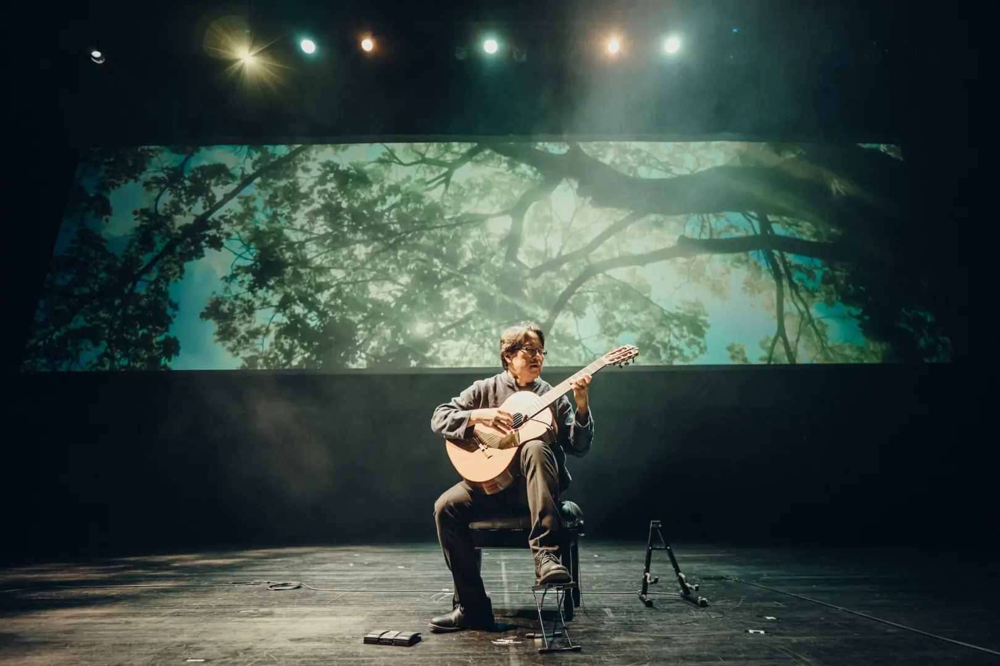
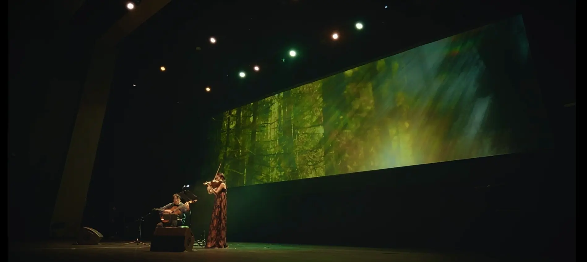
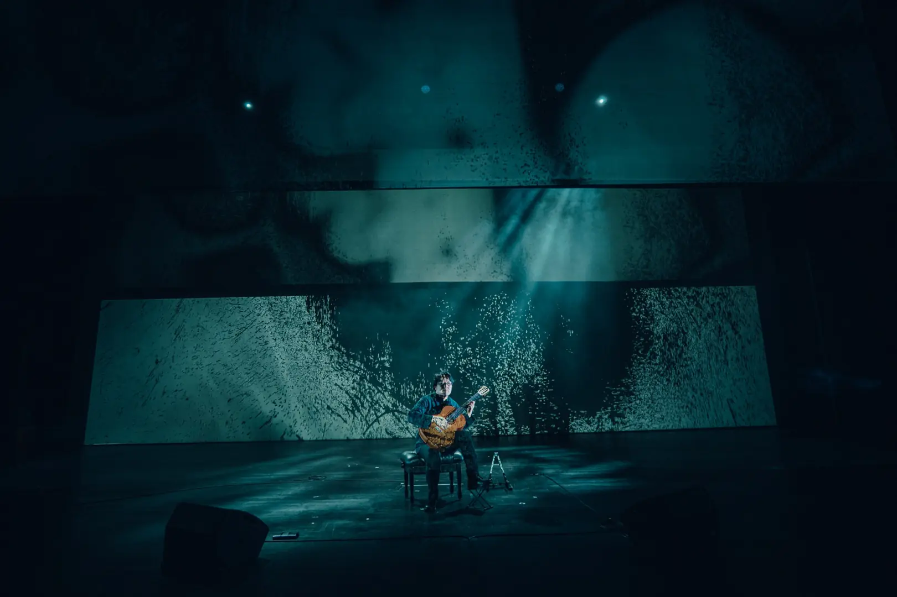
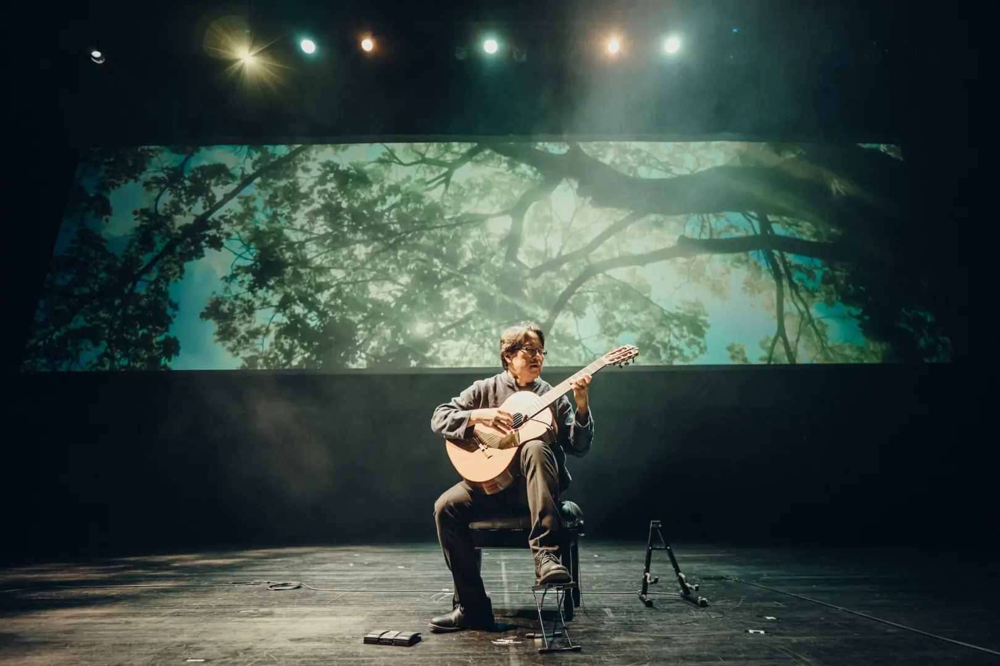
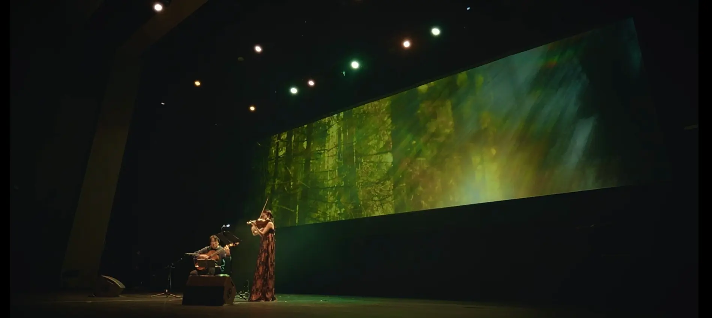
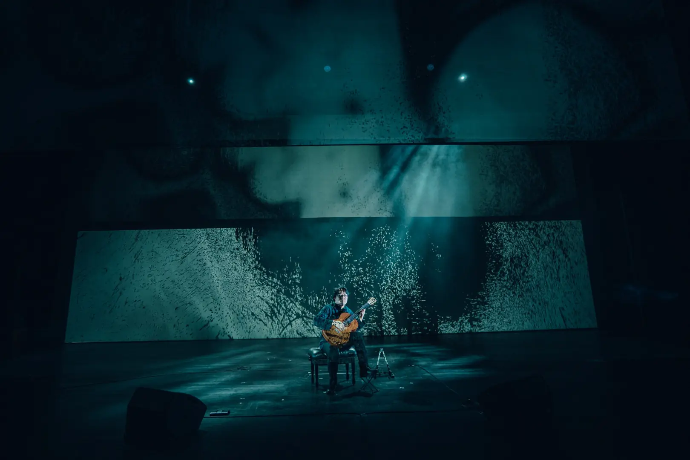

숲
숲에 들어설 때마다 나무들은 저마다의 자리를 지키며 선명한 존재감을 드러낸다. 특히 소나무와 잣나무 숲 사이로 스며드는 빛과 바람, 솔잎의 향기는 언제나 마음을 맑게 한다. 이 곡은 그런 숲의 풍경을 통해 ‘자신의 자리를 묵묵히 지켜내는 이들의 삶’을 음악으로 비춘 작품이다. 2022년 기타 독주로 발표되었으며, 이번 무대에서는 바이올린과의 이중주로 연주된다. :contentReference[oaicite:1]{index=1}
바다, 산
산을 오르는 길은 늘 오르막과 내리막, 고요와 험난함이 교차한다. 짙은 그늘을 지나 다시 빛을 마주하는 순간, 인간은 자연의 풍경 속에서 자신의 삶을 비춰보게 된다. 이 곡은 그런 산행의 여정을 음악으로 옮긴 작품이다. 기타의 선율은 산길의 오르막과 내리막을 지나 정상에서 마주하는 빛을 노래하며, 삶의 굴곡 끝에 피어나는 성취와 희망을 상징한다.
‘바다’는 끝없이 반복되는 파도의 리듬을 따라 흐르는 곡이다. 파도는 매번 같은 자리로 밀려오지만, 그 울림 속에는 다채로운 빛깔의 위로가 숨어 있다. 오래 바라보고 있으면 어느새 한 가지 진실만을 고요히 되뇌는 듯하다. 끊임없이 다가오고 물러서는 파도의 숨결은, 삶을 버텨내는 우리에게 변치 않는 어떤 답을 속삭이며 마음을 다독인다.
두 곡은 여행과 일상에서 얻은 풍경을 음악으로 번역한 연작 ‘음악적 풍경(Musicscape)’의 일부로, 자연 속에 깃든 시간과 인간의 삶을 서정적으로 비춘 작품이다. :contentReference[oaicite:2]{index=2}
서(書)
이 곡은 서예의 호흡과 필법, 그리고 그 안에 담긴 정신에서 출발한다. 각 섹션은 붓의 획이 이어지듯 변화하면서도 끊김 없이 이어지며, 다양한 주법은 먹의 농담과 필선의 기세를 음악으로 번역한다. 〈서〉는 작곡가 최인이 과거 예술의전당 서예박물관에서 열린 기획전 최치원전에 참여하며 탄생했다. 그는 여러 분야 예술가들과 함께 최치원의 삶과 정신을 연구하고 답사한 뒤, 각자의 작품을 선보였고, 그 과정에서 이 곡을 완성했다. 서예라는 우수한 우리 문화에 대한 헌정이자, 동시에 최치원의 삶과 정신을 담아낸 작품이다. 글을 쓰기 전 호흡을 가다듬고 마음을 곧게 세우는 선비들의 태도에서 깊은 감동을 받아, 이를 음악으로 표현하고자 했다. 곡 속에는 우리 전통문화의 깊은 정신성과 그것을 알리고자 하는 작곡가의 열망이 깃들어 있다. :contentReference[oaicite:3]{index=3}
가던길
나그네가 길 위에서 만나는 풍경과 사람들, 그리고 다시 떠나야 하는 순간에서 영감을 얻은 곡이다. 여정은 경기에서 정선, 태백과 삼척으로 이어지지만, 이 길은 단순한 여행이 아니라 삶 그 자체의 은유이기도 하다. 만남과 이별, 기쁨과 슬픔, 삶의 희로애락이 길 위에서 교차한다. 메나리조 선율은 각 지역의 정서를 담아 흘러가며, 그 선율 속에서 여행길은 인생의 궤적처럼 깊이를 더한다. 피리와 기타의 대화는 서로 다른 세계가 만나 부딪히고 어우러지며, 전통과 현대가 교차하는 순간에 새로운 울림을 만들어낸다. 이 곡은 나그네가 걸어가는 길이 결국 우리의 삶과 다르지 않음을 보여준다. 익숙한 듯 낯선 선율은 관객에게 자기 삶의 여정을 비추어 보게 하고, 음악 속에서 잔잔한 위로와 깨달음을 남긴다. :contentReference[oaicite:4]{index=4}
감포 앞 바다에서
신라 문무대왕의 숨결이 남아 있는 감포 앞바다. 감은사지, 이견대, 문무대왕암을 답사하며 작곡된 이 곡은, 삼국통일을 완수한 왕이 “죽어서도 나라를 지키겠다”는 유언과 함께 동해의 바다에 잠든 정신에서 영감을 얻었다. 또한 모든 파도를 잠재운다는 전설 속의 피리 만파식적의 설화와도 맞닿아 있다. 최인은 이 곡을 원래 대금을 상상하며 썼으나, 후에 피리와의 이중주로 편곡하여 새로운 울림을 발견했다. 피리의 맑은 음색은 바람과 파도의 호흡을 닮아 있고, 기타의 깊이 있는 울림은 대지와 바다의 메아리를 담아낸다. 두 악기의 대화는 과거와 현재, 전통과 현대를 이어주며, 바다를 지키는 문무대왕의 정신과 평화의 염원을 다시 호명한다. 이 곡이 쓰여질 2017년 당시, 사회는 혼란과 분열로 크게 흔들리고 있었다. 작곡가는 감포 앞 바다를 바라보며, 모든 소란과 어지러움이 잠재워지고 평화와 나라의 안녕이 다시 깃들기를 바라는 마음을 담았다. :contentReference[oaicite:5]{index=5}
석풍수
건축가 이타미 준(유동룡)의 제주 건축 작품 〈석풍수〉에서 받은 인상으로 작곡된 곡이다. 하늘과 땅, 인간을 잇는 ‘천지인(天地人)’의 사상과 제주의 바람·돌·물의 요소가 건축에 스며든 장면에서 깊은 감명을 받았다. 이 곡은 건축이 품은 철학과 공간을 직접 체험한 감각을 음악으로 전환한 작품이다. 기타의 울림은 바람과 돌, 물의 감각을 담아내며, 자연과 인간, 그리고 사람을 귀하게 여기는 건축가와 음악가의 따뜻한 마음이 만나 하나의 서정적 풍경으로 그려진다. 클래식기타에 대한 깊은 이해를 바탕으로 쓰인 이 곡은 연주 기법적으로도 완성도가 높으며, 기타의 울림을 통해 제주의 풍경과 건축, 그리고 인간의 정신이 교차하는 순간을 경험하게 한다. :contentReference[oaicite:6]{index=6}
PRAYER
전쟁과 갈등, 부패와 혼란으로 가득한 현실 속에서 평범한 사람들은 늘 불안 속에 살아간다. 이 곡은 그 혼란 속에서 살아가는 모두를 위한 기도다. 격렬한 외침 대신 고요한 음향 속에 간절한 바람을 담아, 음악이 곧 기도가 되는 순간을 구현한다. 개인의 작은 울림이 모여 세상 속에서 희망의 불씨가 되기를 바라는 마음을 담은 작품이다. :contentReference[oaicite:7]{index=7}
ISLAND
서해의 섬들을 여행하며 얻은 인상에서 출발한 곡이다. 멀리서 바라본 외딴섬은 고독하고 외로워 보였으나, 막상 다가가면 길은 험난해도 곳곳마다 아름다운 비경과 생기 넘치는 식생들로 가득 차 있었다. 작곡가는 이 풍경 속에서 ‘아직 우리 마음속에 남아 있는 먼 대상, 아직 가보지 못한 또 다른 섬은 무엇일까’라는 질문을 떠올렸다. 〈섬〉은 고독과 편견, 낯섦에서 새로운 이해와 아름다움을 발견해 가는 과정을 음악으로 담아낸 작품이다. 특히 이 곡이 쓰여진 것은 코로나 시기였다. 모두가 섬처럼 고립되고 외로웠던 그 시간, 서로에게 다가가기가 더욱 어려웠던 경험은 곡의 정서와 겹쳐진다. 작곡가는 섬을 여행하며 마주한 풍경을 빗대어, 고립 속에서도 여전히 살아 숨 쉬는 생명력과 아직 경험하지 못한 가능성의 세계를 노래했다. :contentReference[oaicite:8]{index=8}
FROM HERE TO EVERYWHERE...
끊임없는 경쟁과 외적 기준 속에서 우리는 종종 내적인 평온과 작은 사랑의 마음을 잊곤 한다. 이 곡은 외부의 소음이 아닌 내면의 고요와 평화가 울려 퍼지기를 바라는 마음에서 쓰였다. 산길을 걷다 마주했던 어느 순간, 산중턱에 홀로 피어 있던 한 송이 민들레와 곧이어 만난 산비탈을 가득 메운 노란 민들레 군락이 이 곡의 영감이 되었다. 음악은 한 사람의 마음에서 시작된 작은 소망이 바람을 타고 멀리 퍼져나가 뿌리내리는 모습을 담아낸다. 기타와 바이올린의 선율은 서로를 감싸며 개인의 울림이 세상으로 확장되는 가능성을 노래한다. 작품의 제목처럼, ‘이곳에서부터 어디로든’ 이어지는 길 위에 음악의 희망과 사랑의 메시지가 놓여 있다. :contentReference[oaicite:9]{index=9}
Bluehour
해가 저물고 완전한 어둠이 오기 전 세상이푸른빛으로 물드는 찰나의 시간, 음악은 빛의 마지막 숨결을 따라 고요히 스며든다. 하루를 돌아보며 감사와 평온을 느끼개하는 사색의 노래래 , :contentReference[oaicite:9]{index=9}


 




